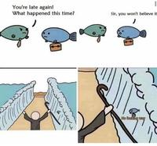

0


Joby Aviation has completed demonstration flights of its electric air taxi over New York City, testing real routes between JFK and Manhattan helipads as it prepares for a future commercial service. The company says its eVTOL could turn a 60- to 120-minute airport trip into a flight of under 10 minutes, though commercial launch still depends on FAA certification. Electrive reports: To launch operations in New York City, Joby acquired Blade Urban Air Mobility last year. Blade already enables helicopter flights for affluent travelers between Manhattan and airports such as JFK or Newark in just five minutes, avoiding up to two hours of traffic and typical airport hassles. Joby aims to replace this service with quiet, electric air taxis as soon as possible, transitioning Blade's existing customers to the new technology.
However, introducing a new aircraft into commercial service requires a years-long certification process, overseen in the US by the Federal Aviation Administration (FAA). Joby is now in the final phase of FAA certification. Following a series of demonstration flights in the San Francisco Bay Area, the company has tested its air taxi in New York City on real flight routes and under real-world conditions. During these tests, Joby demonstrated the acoustics and performance metrics critical for entering the urban air taxi market.
During these demonstration flights, Joby's air taxi took off from John F. Kennedy International Airport (JFK) and landed at various helipads across the city, including Downtown Skyport and the helipads at West 30th Street and East 34th Street in Midtown, where Blade Air Mobility's premium passenger lounges are located. These locations represent some of the commercial routes Joby plans for New York [...]. Fun fact: Joby's eVTOL aircraft are over 100 to 1,000 times quieter than a conventional helicopter, operating at roughly 55-65 dB during takeoff and landing compared to 90+ dB for helicopters.
Read more of this story at Slashdot.
An anonymous reader quotes a report from Wired: A controversial bill in Colorado that would have undone some repair protections in the state has failed. The bill had been the target of right-to-repair advocates, who saw it as a bellwether for how tech companies might try to undo repair legislation more broadly in the US. Colorado's landmark 2024 repair law, the Consumer Right to Repair Digital Electronic Equipment, went into effect in January 2026 and ensured access to tools and documentation people needed to modify and fix digital electronics such as phones, computers, and Wi-Fi routers. The new bill, SB26-090, would have carved out an exception to those repair protections for "critical infrastructure," a loosely defined term that repair advocates worried could be applied to just about any technology.
SB26-090 was introduced during a Colorado Senate hearing on April 2 and was supported by lobbying efforts from companies such as Cisco and IBM. It passed that hearing unanimously. The bill then passed in the Colorado Senate on April 16. On Monday evening, the bill was discussed in a long, delayed hearing in the Colorado House's State, Civic, Military, and Veterans Affairs Committee. Dozens of supporters and detractors gave public comments. Finally, the bill was shot down in a 7-to-4 vote and classified as postponed indefinitely. "While we were making progress at chipping away at the momentum for it, we had still been losing," said Danny Katz, executive director of the local nonprofit consumer advocacy group CoPIRG. "So, we took nothing for granted, and I believe the incredible testimony from the broad range of cybersecurity experts, businesses, repair advocates, recyclers, and people who want the freedom to fix their stuff made a big difference."
Read more of this story at Slashdot.
Hashicorp co-founder Mitchell Hashimoto says GitHub's frequent outages have made it "no longer a place for serious work," prompting him to move his Ghostty terminal emulator project elsewhere after 18 years on the platform. The Register reports: "I've been angry about it. I've hurt people's feelings. I've been lashing out. Because GitHub is failing me, every single day, and it is personal. It is irrationally personal," he wrote. The reason for his ire is the service has become unreliable. "For the past month I've kept a journal where I put an 'X' next to every date where a GitHub outage has negatively impacted my ability to work," he wrote. "Almost every day has an 'X'. On the day I am writing this post, I've been unable to do any PR review for ~2 hours because there is a GitHub Actions outage."
Hashimoto penned his post a few days before an April 28 incident that saw pull requests fail to complete due to an Elasticsearch SNAFU. Incidents like that mean Hashimoto has decided GitHub "is no longer a place for serious work if it just blocks you out for hours per day, every day." "It's not a fun place for me to be anymore," he lamented. "I want to be there but it doesn't want me to be there. I want to get work done and it doesn't want me to get work done. I want to ship software and it doesn't want me to ship software."
The developer says he wants GitHub to improve, but "I also want to code. And I can't code with GitHub anymore. I'm sorry. After 18 years, I've got to go." He's open to a return if GitHub can deliver "real results and improvements, not words and promises." But for now, he's working to move Ghostty to another collaborative code locker. "We have a plan but I'm also very much still in discussions with multiple providers (both commercial and FOSS)," Hashimoto wrote. "It'll take us time to remove all of our dependencies on GitHub and we have a plan in place to do it as incrementally as possible."
He's doing the equivalent of leaving a toothbrush at a former partner's house by leaving a read-only mirror of Ghostty on GitHub, and by keeping his personal projects on the Microsoft-owned service. But Hashimoto's moving his day job somewhere new. "Ghostty is where I, our maintainers, and our open source community are most impacted so that is the focus of this change. We'll see where it goes after that," he concluded.
Read more of this story at Slashdot.
Tony Isaac shares a report from NPR: Federal survey data shows that the amount of math homework assigned to fourth and eighth grade students, in particular, has been steadily declining for the past decade. Some educators and parents say this is a good thing -- students shouldn't spend six or more hours a day at school and still have additional schoolwork to complete at home. But the research on homework is complicated. Some studies show that students who spend more time on homework perform better than their peers. For example, a longitudinal study released in 2021 of more than 6,000 students in Germany, Uruguay and the Netherlands found that lower-performing students who increased the amount of time they spent on math homework performed better in math, even one year later.
Other studies, however, suggest homework has minimal outcomes on academic performance: A 1998 study of more than 700 U.S. students led by a researcher at Duke University found that more homework assigned in elementary grades had no significant effect on standardized test scores. The researchers did find small positive gains on class grades when they looked at both test scores and the proportion of homework students completed. More homework was also associated with negative attitudes about school for younger children in the study. "The best educators figured out a long time ago that we can control what we can control," and that's what happens during the school day, Superintendent Garrett said, not homework. "There has been a shift away from it naturally anyway, and I felt like this made it equitable across our entire school system." "The best argument for homework is that mathematical procedures require practice, and you don't want to waste classroom time on practice, so you send that home," said Tom Loveless, a researcher and former teacher who has studied homework.
Ariel Taylor Smith, senior director of the Center for Policy and Action at the National Parents Union, said: "The thing they point to is that it's an equity issue, and not all parents have the same availability and ability to support their students. I would make the argument that if a kid is really far behind in school, that's an equity issue. They need the additional time to practice." Kids, she said, "need more practice ... Sometimes, you do have to practice the boring stuff, like math."
"The interesting issue for folks to consider is not should there be more homework, but should there be better homework," said Joyce Epstein, who has studied homework and is the co-director of the Center on School, Family, and Community Partnerships at the Johns Hopkins University School of Education. "Better homework in math might be knowing the fact that kids don't have to be practicing for hours, 10 to 20 examples," when they could establish mastery in less time.
Read more of this story at Slashdot.
An anonymous reader quotes a report from NBC News: The Food and Drug Administration on Friday granted a quick review of three experimental psychedelic drugs meant to treat major depression and post-traumatic stress disorder. It's the latest move by the Trump administration signaling a shift in policy toward treatments that also give users a high -- coming a day after the Justice Department said it would ease restrictions on state-licensed medical marijuana.
UK-based biotech company Compass Pathways said Friday it has received an expedited review for its experimental form of synthetic psilocybin for treatment-resistant depression. In a press release the company cited two large, phase 3 studies that had "generated positive data." Usona Institute, headquartered in Wisconsin, also said it's received a voucher for its work with psilocybin to treat major depressive disorder. In an email, a Usona spokesperson said the company expects the review process to last one to two months after it submits its application. "The voucher expedites the timeline only; it does not alter scientific or regulatory standards," the spokesperson wrote. New York-based Transcend Therapeutics has also been granted a priority review voucher for its experimental drug methylone for PTSD, Blake Mandell, the company's chief executive officer, said. "There's a battle still raging in their mind that we don't fully understand biochemically," FDA Commissioner Marty Makary said. "When you see something that looks promising for a community that is suffering with mental health illness, despair and suicidal ideation, you can't help but recognize that."
Makary told NBC News that with the priority voucher program, the agency could potentially approve the first psychedelic drug by the end of summer.
Read more of this story at Slashdot.
fjo3 shares a report from The Times: More than two-thirds of babies under two use screens, a report has found, and some are exposed for up to eight hours a day. Nearly a third of newborns were found to be watching screens for more than three hours a day, while almost 20 percent of infants of four to 11 months used screens for more than an hour a day. The report comes after the government issued guidance that children under two do not use screens at all, apart from communal activities such as video-calling relatives.
In a review of the current research, researchers found evidence linking screen time to poorer outcomes for children, including an increased risk of obesity, short-sightedness, sleep and behavioural difficulties, and later challenges with friendships. [...] The research also revealed why children and parents use screens, with families reporting children doing so for educational purposes, entertainment, play and to communicate and bond with others. Parents, meanwhile, used screens to occupy or distract children, which helped caregivers to complete domestic duties, paid employment and other caring responsibilities. Nearly a quarter of parents -- 23.6 percent -- either had no childcare or were not aware of the government's early years offer.
Read more of this story at Slashdot.
Elon Musk testified on day two of his trial against OpenAI, saying he helped create the company as a nonprofit counterweight to Google and would not have backed it if the goal had been private profit. CNBC reports: Musk on Tuesday was the first witness called to testify in the trial. He spoke about his upbringing, his many companies, his role in founding OpenAI and his understanding of its structure. Musk said in his testimony that he was not opposed to the creation of a small for-profit subsidiary, "as long as the tail didn't wag the dog." Musk said he was motivated to start OpenAI to serve as a counterweight to Google. He got the idea after an argument he had with Google co-founder Larry Page, who called Musk a "speciesist for being pro-human," he testified. "I could have started it as a for profit and I chose not to," Musk said on the stand.
Earlier, attorneys for Musk and OpenAI presented their opening arguments to the jury. Musk's lead trial lawyer, Steven Molo, delivered the opening statement for the Tesla and SpaceX CEO. OpenAI lawyer William Savitt gave the opening statement for the AI company, Altman and Brockman. OpenAI has characterized Musk's lawsuit as a baseless "harassment campaign." The company said Monday in a post on X that it "can't wait to make our case in court where both the truth and the law are on our side."
During his testimony on Tuesday, Musk repeatedly emphasized that he founded OpenAI to serve as a counterweight to Google. He said he got the idea after an argument about AI safety with Google co-founder Larry Page, who Musk said called him "a speciesist for being pro-human." Musk said he was concerned Page was not taking AI safety seriously, so he wanted there to be an nonprofit, open source alternative to Google. "I could have started it as a for profit and I chose not to," Musk said on the stand. Further reading: Elon Musk and OpenAI CEO Sam Altman Head To Court
Read more of this story at Slashdot.
An anonymous reader quotes a report from the San Francisco Chronicle: Elon Musk returned to the witness stand Wednesday in Oakland federal court for a second day of testimony in his case against OpenAI, detailing his shift from being an enthusiastic supporter of the nonprofit to feeling betrayed. He also clashed repeatedly with OpenAI's attorney over questions that Musk believed were unfair. He said his feelings towards OpenAI CEO Sam Altman and President Greg Brockman shifted from a "phase one" of support, "phase two" of doubts, and finally "phase three, where I'm sure they're looting the nonprofit. We're currently in phase three," Musk said with a chuckle. Musk said he was a "fool" for giving OpenAI "$38 million of essentially free funding to create what would become an $800 billion company," of which he has no equity stake.
In his 2024 lawsuit, Musk alleged breach of charitable trust and unjust enrichment, arguing OpenAI abandoned its original nonprofit mission to benefit humanity to pursue financial gain. OpenAI's lawyer William Savitt argued Tuesday during his opening statement that the nonprofit entity remains in control of the for-profit public benefit corporation and is now one of the most well-funded nonprofits in the world. Musk is seeking to oust Altman from OpenAI's board and upwards of $134 billion in damages, which he said would be used to fund OpenAI's nonprofit mission. During cross-examination, Savitt clashed with Musk over questioning. Savitt asked whether Musk had contributed $38 million to OpenAI, rather than the $100 million that he later claimed to have invested on X. Musk said he also contributed his reputation to the company and came up with the idea for the name, leading Savitt to ask Musk to respond yes or no to "simple" questions.
"Your questions are not simple. They're designed to trick me, essentially," Musk said, adding that he had to elaborate or it would mislead the jury. He compared Savitt's questions to asking, "have you stopped beating your wife?" Judge Yvonne Gonzalez Rogers intervened, leading Musk to answer yes to the $38 million investment amount. The world's richest man said his doubts grew and by late 2022, he thought "wait a second, these guys are betraying their promise. They're breaking the deal." "I started to lose confidence that they were telling me the truth," Musk said. A turning point was co-defendent Microsoft's investment of billions of dollars into OpenAI, Musk said. On October 23, 2022, Musk texted Altman that he was "disturbed" to see OpenAI's valuation of $20 billion in the wake of the Microsoft deal. Musk called the deal a "bait and switch," since a nonprofit doesn't have a valuation. OpenAI had "for all intents and purposes" become primarily a for-profit company, Musk argued. Altman responded to Musk by text that "I agree this feels bad," saying that OpenAI had previously offered equity in the company but Musk hadn't wanted it at the time. Altman said the company was happy to offer equity in the future. Musk said it "didn't seem to make sense to me" to hold equity in what should be a nonprofit. Musk also testified about former OpenAI board member Shivon Zilis, who lives with him, is the mother of four of his children, and served as a senior advisor at Neuralink. He denied that she shared sensitive OpenAI information with him. Court evidence showed Musk had encouraged her to stay close to OpenAI to "keep info flowing" and had approved Neuralink recruiting OpenAI employees, which he defended by saying workers are free to change jobs. "It's a free country," Musk said.
Recap:
Musk Testifies OpenAI Was Created As Nonprofit To Counter Google (Day Two)
Elon Musk and OpenAI CEO Sam Altman Head To Court (Day One)
Read more of this story at Slashdot.
A federal judge denied Sam Bankman-Fried's request for a new trial, calling his claims of DOJ witness intimidation "wildly conspiratorial" and unsupported by the record. Judge Lewis Kaplan said (PDF) the FTX founder's motion appeared tied to a pre-indictment plan to recast himself as a Republican victim of Biden's DOJ in hopes of gaining sympathy, leniency, or even a Trump pardon. Ars Technica reports: Bankman-Fried was sentenced to 25 years in prison in 2024 for "masterminding one of the largest financial frauds in American history," US District Judge Lewis Kaplan wrote in his order. He was convicted on all charges, including wire fraud, conspiracy to commit securities fraud, commodities fraud, and money laundering. There is already an appeal pending in another court, the judge noted. But Bankman-Fried filed a separate motion for a new trial, claiming that there were "newly discovered" witnesses and evidence that might have helped his defense, if Joe Biden's Department of Justice hadn't intimidated them into refusing to testify or, in one case, lying on the stand.
He also asked for a new judge, wanting Kaplan to recuse himself. However, Kaplan pointed out that "none of the witnesses" were "newly discovered." And more concerningly, Bankman-Fried offered no evidence that the witnesses could prove the "wildly conspiratorial" theory the FTX founder raised, claiming that their absence at the trial was a "product of government threats and retaliation," the judge wrote. Bankman-Fried's theory is "entirely contradicted by the record," Kaplan said. He emphasized that granting Bankman-Fried's request "would be a large waste of judicial resources as it could require another judge to familiarize himself or herself with an extensive and complicated record."
Additionally, all three witnesses that Bankman-Fried claimed could give crucial testimony in his defense were known to him throughout the trial, and he never sought to compel their testimony. And the "self-serving social-media posts" of one witness who now claims that he lied when testifying against Bankman-Fried -- "Ryan Salame, who pleaded guilty" -- must be met with "utmost suspicion," Kaplan said. "If one were to take Salame at his current word, he lied under oath when pleading guilty before this Court," Kaplan wrote. Even if taken seriously, "his out-of-court, unsworn statements could not come anywhere close to clearing the bar to warrant a new trial," Kaplan said, deeming Salame's credibility "highly questionable." Further, "even if these individuals had testified for Bankman-Fried, his protestations that one or more of them would have supported his claims that FTX was not insolvent and that his victims all were compensated fully in the bankruptcy proceedings are inaccurate or misleading," Kaplan concluded.
In the order, Kaplan's frustration seems palpable, as there may have been no need for him to rule on the motion at all after Bankman-Fried requested to withdraw it. But the judge said the ruling was needed after Bankman-Fried waited to file his withdrawal request until after the DOJ and the court wasted time responding and reviewing filings, the judge said. Troublingly, Bankman-Fried's request to withdraw his request without prejudice would have allowed him to potentially request a new trial after the appeal ended. Based on the substance of the filing, that risked wasting future court resources, Kaplan determined. To prevent overburdening the justice system, Kaplan deemed it necessary to deny Bankman-Fried's motion and request for recusal, rather than allow him to withdraw the filing without prejudice.
Read more of this story at Slashdot.
Canonical's plan to add AI features to Ubuntu has sparked pushback from users who are concerned it could follow Windows 11's AI-heavy direction. "After Canonical's announcement earlier this week that it's bringing AI features to Ubuntu, replies included requests for an AI 'kill switch' or a way to disable the upcoming features," reports The Verge. Canonical says it has no plans for a "global AI kill switch" but it will allow users to remove any AI features they don't want. From the report: In his original post, [Canonical's VP of engineering, Jon Seager] said the upcoming AI features will include accessibility tools like AI speech-to-text and text-to-speech, along with agentic AI features for tasks like troubleshooting and automation. Canonical is also encouraging its engineers to use AI more and plans to begin introducing AI features in Ubuntu "throughout the next year."
In a follow-up comment, Seager clarified that, "my plan is to introduce AI-backed features as a 'preview' on a strictly opt-in basis in [Ubuntu version] 26.10. In subsequent releases, my plan is to have a step in the initial setup wizard that allows the user to choose whether or not they'd like the AI-native features enabled." Ultimately, he said, "All of these capabilities will be delivered as Snaps to the OS, layered on top of the existing Ubuntu stack. That means there will always be the option of removing those Snaps." Users who prefer to avoid AI entirely could switch to other distros like Linux Mint, Pop!_OS, or Zorin OS. "These distros have some similarities to Ubuntu, but may not necessarily adopt the new AI features Canonical is rolling out," adds The Verge.
Read more of this story at Slashdot.
Longtime Slashdot reader schwit1 writes: California's long-delayed high-speed rail project is now facing renewed scrutiny after state leaders revealed a dramatically higher price tag, now estimated at roughly $231 billion, nearly seven times the original $33 billion projection approved by voters in 2008. The revised figures have reignited talks in Sacramento over whether the project can realistically be completed, how long it will take, and whether the state can continue to fund it at this scale.
Senator Strickland pointed to comments from Lou Thompson, former chair of the California High-Speed Rail Authority peer review group, who recently criticized the latest draft business plan. Thompson wrote that the 2026 draft plan "has reached a dead end," arguing that the project has drifted far from its original vision due to escalating costs, delays, and unfunded gaps. Under current projections, assuming funding and construction proceed as planned, service between San Francisco and Bakersfield could begin around 2033, while the full Los Angeles to San Francisco connection could extend to 2040.
Read more of this story at Slashdot.
An anonymous reader quotes a report from Ars Technica: Humanoid robots are getting a new gig as baggage handlers and cargo loaders at Tokyo's Haneda Airport -- part of a Japan Airlines experiment to address a human labor shortage as airport visitor numbers have surged in recent years. The demonstration, set to launch in May 2026, could eventually test humanoid robots in a wide range of airport tasks, including cleaning aircraft cabins and possibly handling ground support equipment such as baggage carts, according to a Japan Airlines press release. The trials are scheduled to run until 2028, which suggests that travelers flying into or out of Tokyo may spot some of the robots at work.
[...] Japan Airlines is interested in testing whether humanoid robots powered by some of the latest AI models can adapt more readily to human work environments -- such as airports -- without requiring dedicated work stations or other significant workplace modifications. The airline's subsidiary, JAL Ground Service, has teamed up with GMO AI & Robotics Corporation to oversee the demonstration. The Japanese companies will test the G1 robot and Walker E robot from Chinese companies Unitree Robotics and UBTECH Robotics, according to The Asia Business Daily. Humanoid robots still typically cost tens of thousands of dollars per unit despite Chinese robotics manufacturers scaling up mass production, although the Unitree G1 robot costs as low as $13,500 for the baseline model.
A new video from an apparently staged demonstration in an aircraft hangar shows one of the humanoid robots tottering up to a large, metal cargo container and making a vague pushing gesture. But the cargo container only begins to move once a human worker starts the conveyor belt to move the container toward the aircraft. Presumably, the robots will need to put in much more effective work if they're to prove as productive as human airport workers. Having robots working directly alongside humans will also introduce new safety considerations for airports like Haneda Airport, which is Japan's second-largest airport, with flights arriving approximately every two minutes. The first step in the pilot program will involve identifying which airport areas will be safest for humanoid robots.
Read more of this story at Slashdot.
An anonymous reader quotes a report from Ars Technica: University of Oregon chemist Christopher Hendon loves his coffee -- so much so that studying all the factors that go into creating the perfect cuppa constitutes a significant area of research for him. His latest project: discovering a novel means of measuring the flavor profile of coffee simply by sending an electrical current through a sample beverage. The results appear in a new paper published in the journal Nature Communications.
[...] The coffee industry typically uses a method for measuring the refractive index of coffee -- i.e., how light bends as it travels through the liquid -- to determine strength, but it doesn't capture the contribution of roast color to the overall flavor profile. So for this latest study, Hendon decided to focus on roast color and beverage strength, the two variables most likely to affect the sensory profile of the final cuppa. His solution turned out to be quite simple. Hendon repurposed an electrochemical tool called a potentiostat, typically used to test battery and fuel cell performance. Hendon used the tool to measure how electricity interacted with the liquid. He found that this provided a better measurement of the flavor profile. He even tested it on four different samples of coffee beans and successfully identified the distinctive signature of a batch that had failed the roaster's quality-control process.
Granted, one's taste in coffee is fairly subjective, so Hendon's goal was not to achieve a "perfect" cup but to give baristas a simple tool to consistently reproduce flavor profiles more tailored to a given customer's taste. "It's an objective way to make a statement about what people like in a cup of coffee," said Hendon. "The reason you have an enjoyable cup of coffee is almost certainly that you have selected a coffee of a particular roast color and extracted it to a desired strength. Until now, we haven't been able to separate those variables. Now we can diagnose what gives rise to that delicious cup." Outside of his latest electrical-current experiment, Christopher Hendon's coffee research has shown that espresso can be made more consistently by modeling extraction yield -- how much coffee dissolves into the final drink -- and controlling water flow and pressure.
He also found that static electricity from grinding causes fine coffee particles to clump, which disrupts brewing. The solution: adding a small squirt of water to beans before grinding (known as the Ross droplet technique) to reduce that static, cut clumping and waste, and lead to a stronger, more consistent espresso.
Read more of this story at Slashdot.
Tesla has produced the first Semi from its new high-volume production line at Gigafactory Nevada, a milestone for the long-delayed electric Class 8 truck program after years of pilot builds and delays. Electrek reports: The Tesla Semi has had one of the longest gestation periods in Tesla's history. First unveiled in 2017, the truck was originally promised for production in 2019. That target slipped repeatedly -- to 2020, then 2021, then 2022 -- before Tesla finally delivered a handful of units to PepsiCo in late 2022. Those early trucks were essentially hand-built on a pilot line. Tesla spent the next three years refining the design, cutting roughly 1,000 lbs from the truck, and building out a dedicated factory adjacent to Gigafactory Nevada in Sparks. The company revealed the final production specs in February, confirming two trims: a Standard Range with 325 miles at full 82,000-lb gross combination weight, and a Long Range with 500 miles of range.
Tesla is quoting $290,000 for the 500-mile Long Range version and roughly $260,000 for the Standard Range -- making it the lowest-priced Class 8 battery electric tractor on the market. The shift from a pilot line to a high-volume production line is significant. Tesla's Semi factory is designed for an annual capacity of 50,000 trucks, though the company will ramp gradually. Analysts project deliveries between 5,000 and 15,000 units in 2026, but that sounds way too optimistic. [...] Both trims feature an 800-kW tri-motor drivetrain producing 1,072 hp and support 1.2-MW Megacharger speeds, restoring 60% of range in roughly 30 minutes -- conveniently timed around a driver's mandatory rest break. Tesla has opened its first Megacharger station in Ontario, California, and has mapped 66 Megacharger locations across 15 states.
Read more of this story at Slashdot.
MacRumors reports that Apple has effectively paused work on Vision Pro after the M5 refresh failed to revive demand. The team has reportedly been reassigned and the company is now shifting focus toward smart glasses instead. From the report: The Vision Pro has been criticized for its high price tag and its uncomfortable weight. The device is over 1.3 pounds, and even with the more comfortable Dual Knit Band that Apple added to redistribute weight, it continues to be hard to wear for long periods of time. The M5 chip added a 120Hz refresh rate, 10 percent more rendered pixels, and around 30 additional minutes of battery life, but the price tag stayed at $3,499, and it ended up not selling well. The Vision Pro has been unpopular since it first launched, and Apple only sold around 600,000 units in total. Insider sources told MacRumors that Apple has received an unusually high percentage of returns, far exceeding any other modern Apple product.
[...] If Apple finds a way to create a much cheaper, more comfortable VR headset in the future, the Vision Pro line could be revived, but right now, the company has no plans to launch a new model. Apple has not discontinued the Vision Pro and is continuing to sell the M5 model. Instead of continuing to experiment with virtual reality, Apple is working on smart glasses that will eventually incorporate augmented reality capabilities, but the first version will be similar to the Ray-Ban Meta smart glasses with AI and no integrated display.
Read more of this story at Slashdot.
Financial Times : Analysis: Meta, Alphabet, Microsoft, and Amazon's combined capex hit a record $130B in Q1, and it is set to reach $725B in 2026, up 77% from $410B in 2025 — Meta stock drops on capex increase while Alphabet's cloud business grows faster than rivals Amazon and Microsoft
Olivia Poh / Bloomberg : GoTo reports net income of ~$15M for Q1 2026, its first ever, after job cuts and unit disposals helped Indonesia's largest internet company reduce costs — GoTo Group shares jumped after the Indonesian ride-hailing and food delivery company reported its first-ever net income, a major milestone in its turnaround effort.
Will Knight / Wired : A look at Eka, which trains its robotic claw on a “vision-force-action model” incorporating realistic joints, motors, and physics principles into its simulation — From sorting chicken nuggets to screwing in lightbulbs, Eka's robotic claw feels like we're approaching a ChatGPT moment for the physical world.
Counterpoint Research : Apple shipped 71.6% of all smartphones with satellite connectivity in 2025; smartphones with satellite connectivity to reach 46% of global shipments by 2030 — - Driven by premium devices from OEMs such as Apple, Samsung, Google and Huawei, satellite connectivity will reach 46% of the smartphones shipped globally in 2030.
Anthropic : Anthropic unveils BioMysteryBench to test Claude's bioinformatics skills against human experts, and says Mythos solved ~30% of 23 questions that stumped experts — In this post, Brianna, a researcher on the discovery team, shares results from a recent bioinformatics benchmarking effort.
Hyonhee Shin / Bloomberg : Hyundai unveils Pleos Connect, a next-generation infotainment system with Gleo AI voice assistant, debuting in May on the new Grandeur sedan in South Korea — Hyundai Motor Co. unveiled a next-generation infotainment system — anchored by a new AI voice assistant capable of natural …
Aarian Marshall / Wired : Leaked audio: San Francisco and Austin first responders told the NHTSA that Waymo robotaxis are “backsliding” and committing more traffic violations than before — “I believe the technology was deployed too quickly in too vast amounts, with hundreds of vehicles, when it wasn't really ready …
Dina Bass / Bloomberg : OpenAI says it has signed contracts for 10GW of US AI compute capacity, with 3GW+ added in the past 90 days, hitting a goal it once aimed to reach by 2029 — OpenAI has met a key milestone for securing AI capacity in the US several years ahead of schedule, boosting the startup's ambitious plans for data center expansion.
Wired : Musk v. Altman: internal 2017 emails show Musk sought majority voting control over OpenAI co-founders, withheld promised funding, and tried to poach researchers — Tensions flared on the third day of trial in Musk v. Altman as OpenAI's lawyers cross-examined Musk.
Frank Konkel / Nextgov/FCW : The US FDA launches a pilot using AI and cloud computing to give the agency a “direct data feed” to real-time clinical data, aiming to speed up drug approval — The first-of-its-kind pilot could lead to speedier regulatory approval of medical drugs and devices and potentially reduce …
Zeyi Yang / Wired : SenseTime releases SenseNova-U1, an open-source image model that it says can “read” images without translating them to text, reducing computing power needs — With US restrictions limiting its access to advanced tech, SenseTime is doubling down on open source with a new model optimized to run on Chinese-made chips.
Jennifer Williams / Wall Street Journal : Analysts: TikTok Shop generated $4.9B in US sales during Q1 2026, doubling its volume from the previous year; Q1 consumer spending on the platform rose 46% YoY — Ralph Lauren, Olaplex and Ulta Beauty recently launched storefronts on the platform — Americans are increasingly turning …
Krisztian Sandor / CoinDesk : Visa says its stablecoin settlement pilot supports nine networks, including Base, Polygon, Canton Network, Arc, and Tempo, and has hit a $7B annualized run rate — The payments giant added support for Stripe's Tempo, Circle's Arc, Coinbase's Base, Polygon and Canton Network as stablecoins gain traction in global money movement.
Shalini Ramachandran / Wall Street Journal : How US schools' overreliance on YouTube for educational content encourages students to drift into endless video scrolling on school-issued devices — Parents find their kids captive to the video streaming site on their school-issued devices; for one, it was 13,000 YouTube videos in three months
Wall Street Journal : Sources: the White House opposes Anthropic's plan to expand access to Mythos to 70 additional companies and organizations because of concerns about security — Relationship is still complicated despite efforts from both sides to de-escalate — The White House opposes a plan from Anthropic …